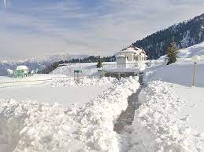
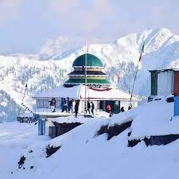

Snowy mountains of Pirchinasi


My journey to the snowy mountains of Pirchinasi was nothing short of magical. As I made my way through the pristine white landscapes, I felt like I had entered a winter wonderland. The snow-capped peaks, glistening in the sunlight, were a sight to behold. I indulged in thrilling activities like snowboarding and skiing, my heart racing with excitement as I glided down the slopes. But it wasn't all about adventure; I also found tranquility in the serene surroundings. The peaceful atmosphere of Pirchinasi allowed for moments of reflection, and the sound of my footsteps on the soft snow was the only noise that broke the silence. I met locals who shared their stories, and their warmth was as comforting as a cup of hot cocoa on a chilly day. Pirchinasi's snowy mountains offered a blend of adventure and serenity, making it a destination I would revisit in a heartbeat.